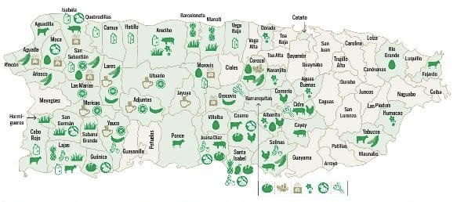

Apoya lo local:
Consume productos frescos, locales y sostenibles cultivados con amor en Puerto Rico.
Aprende más sobre nosotros¿Quiénes somos?
¿SabÃas que más del 95% de los alimentos que consumimos en Puerto Rico son importados? Esta dependencia nos hace vulnerables y afecta a nuestros agricultores locales. Consumo Inteligente nació con una misión simple: crear un espacio donde los agricultores de Puerto Rico puedan ofrecer sus productos directamente al público, sin comisiones ni intermediarios. Queremos que cada familia puertorriqueña tenga acceso a productos frescos, sostenibles y de aquà mismo. Juntos, podemos fortalecer nuestra economÃa, apoyar a nuestros agricultores y promover un consumo más consciente.
Misión
Fomentar el consumo de productos agrÃcolas locales en Puerto Rico, conectando directamente a agricultores con consumidores, y apoyando asà una economÃa alimentaria más justa, sostenible y resiliente.
Visión
Un Puerto Rico donde los alimentos frescos, locales y nutritivos sean accesibles para todos, y donde los agricultores sean valorados y apoyados por sus comunidades.
Dependencia de alimentos importados.
Creación de Consumo Inteligente.
Conectar agricultores y consumidores.
Impacto en la economÃa local y seguridad alimentaria.
Zonas de Producción en Puerto Rico
“Consume Boricua, apoya a tus agricultores.”
“Juntos fortalecemos nuestra tierra.”
Explora el Mercado
El Mercado de Consumo Inteligente es el espacio donde podrás comprar productos frescos y locales directamente de nuestros agricultores. El sitio todavÃa está en desarrollo: por el momento solo es posible comprar una unidad de cada producto. ¡Estamos trabajando para ofrecerte una experiencia completa muy pronto!
Ir al MercadoRegÃstrate
Al registrarte en Consumo Inteligente podrás:
- ✅ Dar visibilidad a tus productos (para agricultores).
- ✅ Comprar productos locales de forma sencilla (para compradores).
- ✅ Hacer seguimiento de tus pedidos.
- ✅ Formar parte de una comunidad que apoya la agricultura local.
Elige tu rol y completa el formulario para comenzar:
Formulario para Agricultores
Formulario para Compradores
Iniciar Sesión
Si ya tienes una cuenta en Consumo Inteligente, inicia sesión para acceder a todas las funciones.
Contacto
¿Tienes preguntas? Estamos aquà para ayudarte.